AURORA
Embodied Interaction as a Means of Expression for Children at the Helsinki German School
The written thesis is available at Aaltodoc, the institutional repository of Aalto University:
https://urn.fi/URN:NBN:fi:aalto-202606175232
AURORA is an interactive experience that uses the ZED 2i stereo camera and Unreal Engine 5 to create virtual
auroras that follow users’ movements. On 16 April 2024, a total of 21 third-graders from the Helsinki German
School participated in a workshop during the after-school programme. In this workshop, the children were
divided into four groups and asked to interact with AURORA to express friendship.
Findings
Employing practice-based, qualitative research methods, this Master’s thesis project gathered data through
participant observations and semi-structured group interviews. Findings indicate that AURORA provided an
engaging creative outlet for children to articulate their social bonds, facilitated spontaneous group
collaboration, and allowed them to build creative metaphors between auroras and friendships while actively
promoting physical play. Furthermore, the study offers insights into designing non-invasive interactive
technologies for children within informal group environments, emphasizing the importance of centring
children's perspectives throughout the design process.
By comparing all groups side by side with both the observational camera footage and the OBS screen-recordings
as well as a timestamp, I found similarities and patterns in their interactions. The main finding of my
observations was a phenomenon I named “aurora swirl”. When the children held hands and spun in circles, the
auroras mixed into a great white burst of colour. These aurora swirls occurred in all of the group
interactions, appearing simultaneously at the timestamps 02:50 and 06:30.
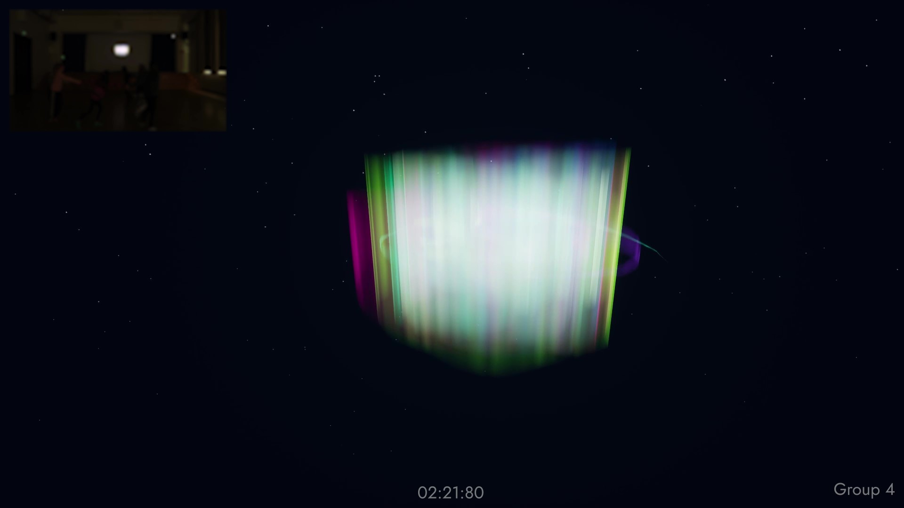
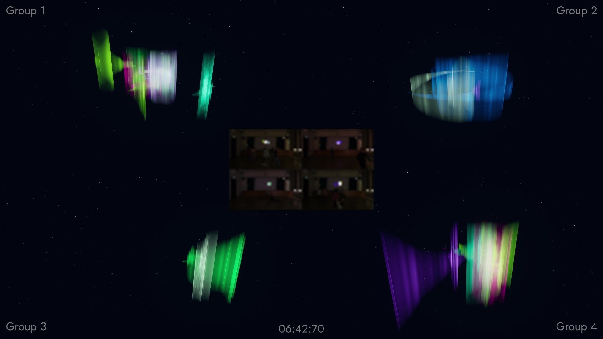
Spatial Sensing, Interaction & Visual Design
BP_ZED_Initializer
The UE5 blueprint “BP_ZED_Initializer” was included in the example project and contained a wide range of
necessary functions and parameters for the ZED 2i to initialise and operate properly. In this file, I tackled
the challenge of improving the programme’s performance while maintaining accurate tracking. I set the ZED 2i’s
resolution to “HD 1080p” and Frame rate to “30 fps”, as well as the Depth Mode to “Ultra”, so the camera’s
image would still be sharp enough to accurately detect users. I further improved performance in the Body
Tracking Parameters tab by choosing “Human body fast” as the Detection Model, “Body 18” as the Body Format (18
motion tracking points per user), and “Upper body” in the Body Selection. By default, the programme also
detected other objects in addition to human bodies, so I restricted the range of detectable objects to humans
only by enabling “Index [0] (person)” and disabling the rest (Index [1–6]) under the Object Class Filter in
the Object Detection Runtime Parameters.
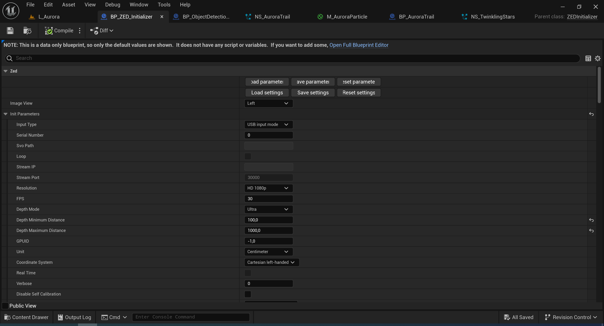
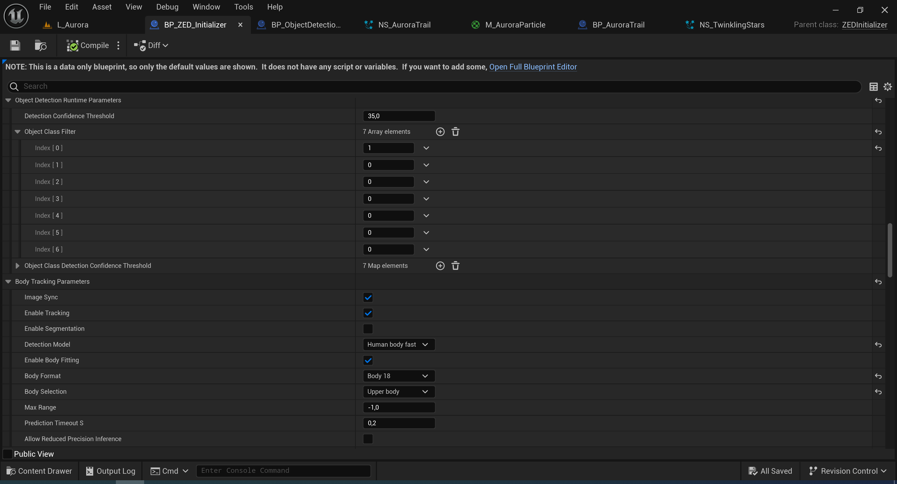
BP_ObjectDetection3D_Visualizer
This blueprint was also included in the example project. It receives the ZED 2i’s object detection and 3D
coordinates data, creates an ID for each object, and links the blueprint actor “BP_AuroraTrail” that spawns
the aurora particle effect at the centre of the bounding box of an object.
During user testing, one main issue was that the testers perceived the abrupt disappearance of their auroras
as confusing and bad-looking when the programme lost track of them. Initialising a function that would
smoothly fade out the aurora trail of a user once they step out of the ZED 2i’s tracking area solved the
problem. For this, I created a function called “Fade and Destroy” in the “BP_Aurora Trail” blueprint that
would use a “Timeline” and “Lerp” node to drop the “Fade Opacity” parameter of the “M_AuroraParticle” material
from 1 to 0 within 1 second before destroying the actor/object. I then integrated the function into the
“BP_ObjectDetection3D_ Visualizer” blueprint to make it work.
The testers also said that it was hard to tell where the borders of the tracking area were, because at that
point the area was only defined by the ZED’s depth range settings, and so the programme would only lose track
of users once they were out of the ZED’s sight. In the “BP_ObjectDetection3D_Visualizer”, I found out that the
“Break SIObject Data” node included outputs for the “Position X” and “Position Y” values of the tracked users.
I used them to define minimum and maximum values. The “Print String” node helped—when connected—to see the
position values on screen and detect the values of the desired range.
In the early version, the programme created auroras only in a colour that I set manually for every user ID. My
goal was that the programme would automatically choose a different colour for each user from a set selection
of aurora colours. To achieve this, I created an array of eight colours in the
“BP_ObjectDetection3D_Visualizer”. Here, the challenge was how the programme could pick a different colour
from the array for every user, but also have a different order every time, so that smaller groups would not
only get shades of green. The solution was to shuffle the array with every new start of the programme. In the
blueprint, I connected a “Shuffle” node behind the colour array and set up a condition with a “Color Count”
variable that would assign the next colour of the array to a new user and start again at element [0] when it
reached the end of the array.
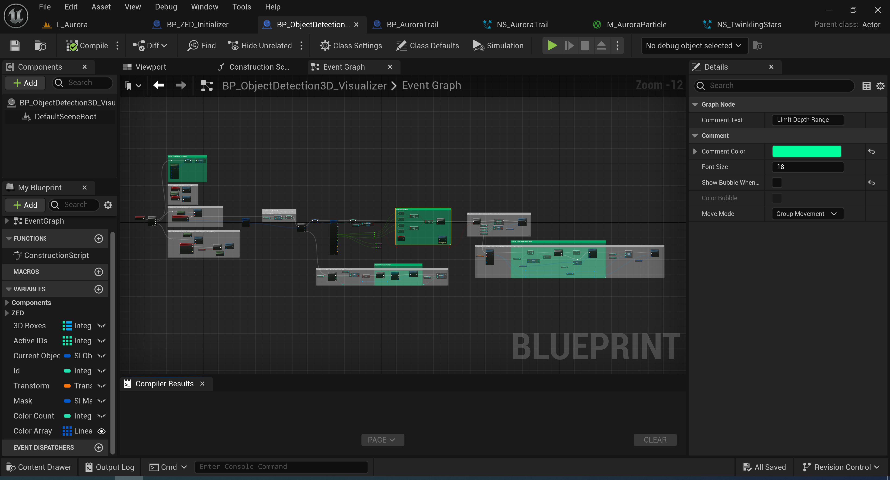
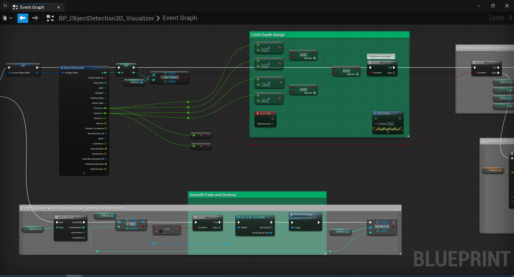
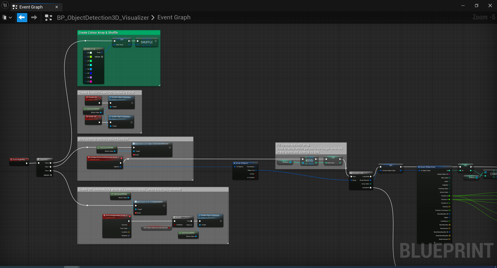
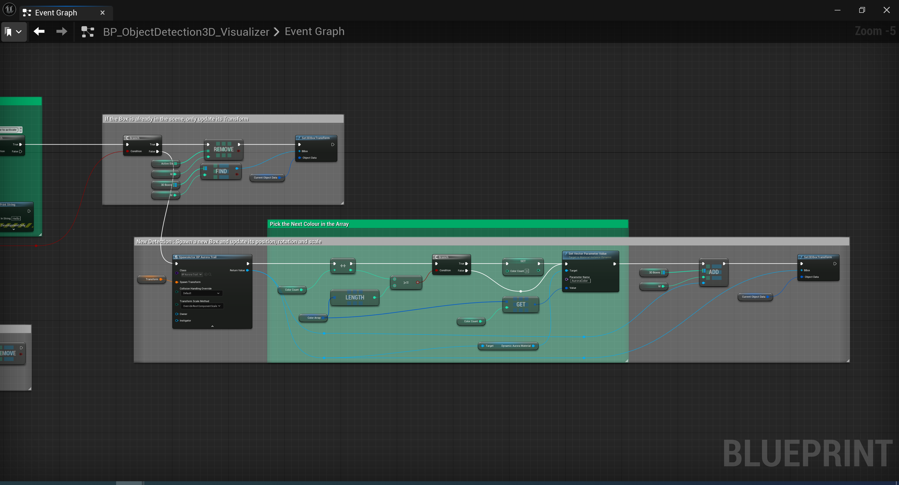
AuroraTrail
The main Niagara system “NS_AuroraTrail” is designed to simulate the characteristic aurora arcs that will
trail the users’ positions. Using the GPU for improved performance, the system spawns ten ribbon particles per
second with a size of 300 units and a lifetime of 15 seconds, so that they disappear after a while and clear
the screen. The “Scale Ribbon Width” setting creates a smooth fade in and out at the trail’s start and end. In
the “Ribbon Renderer” settings of the “NS_AuroraTrail”, I selected “M_AuroraParticle” as the material for the
ribbon particles, with “DynamicAuroraMaterial” as the Material User Parameter (which controls the colour of
each user’s aurora effect), and “Custom Side Vector” as the “Facing Mode”, so that the particles would align
properly to the camera. I chose “Tiled by Distance” as the “UV Mode” in the UV settings to tile the particle
materials correctly and blend edges smoothly.
I created the blueprint actor “BP_AuroraTrail” from scratch. It contains the particle effect “NS_AuroraTrail”
and a method to dynamically change its material colour.
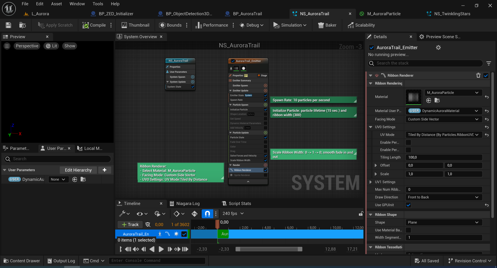
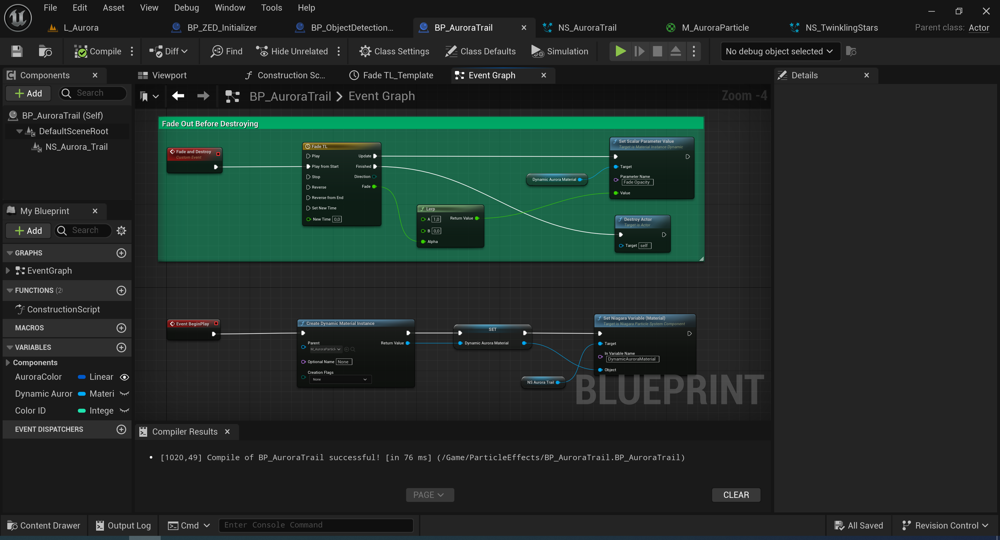
M_AuroraParticle
The material “M_AuroraParticle” is assigned to the ribbon particles of “NS_AuroraTrail”. It gives the aurora
effect its luminous colour as well as its translucent and striped texture, simulating what was earlier
described as rays. I chose “Blend Mode: Translucent” and “Shading Model: Unlit”, added a “Particle Color”
node, and connected its RGB values into the material’s “Emissive Color” channel and its RGBA values into
“Opacity”. “AuroraColor” is the dynamic parameter controlling the material colour via the shuffled colour
array. Its “Emissive Strength” is multiplied by a value of 100 to make the auroras glow brighter, countering
their low opacity. To simulate the motion of the rays, I used “TextureCoordinate”, “OneMinus”, and “Panner”
nodes to animate a noise texture. I also used “TextureCoordinate” and “OneMinus” nodes to create opacity
gradients for smoother top and bottom edges of the particles. Both are multiplied with the RGBA values of the
“Particle Color” node and connected into the material’s “Opacity” channel. The “Fade Opacity” parameter is
used in the “Fade and Destroy” function to drop the opacity of the material to 0 when triggered.
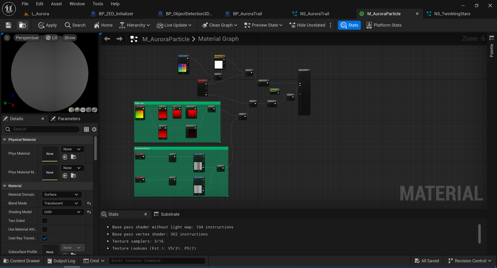
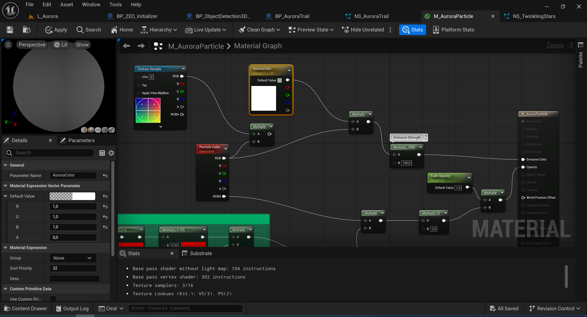
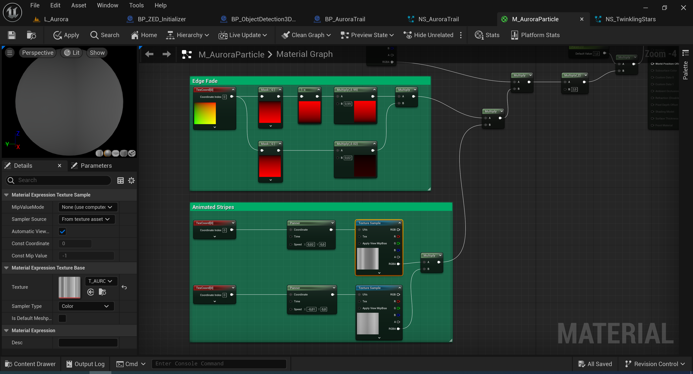
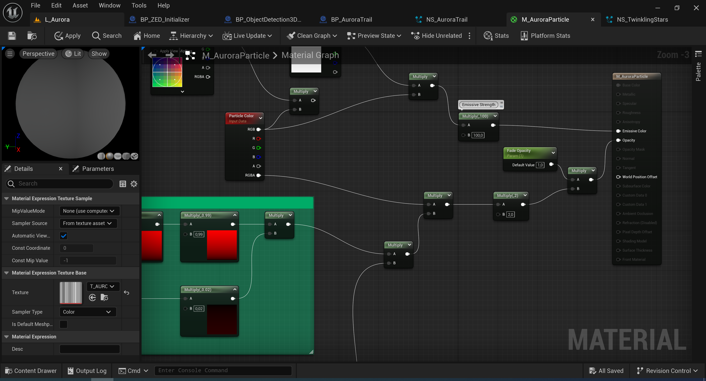
Setup and Configuration
My assistant Raphael and I set up the project at the gym hall of the Helsinki German School.


Friendship Bracelets
I wanted to have a little present for the children as a reward for participating in the workshop. When I came
up with the idea of expressing friendship through my programme AURORA, I eventually had the idea to create
friendship bracelets made of cotton yarn in aurora colours. And so I bought six balls of white, green, dark
seagreen, blue, purple, and pink cotton yarn.
The bracelets were made of three different coloured threads, resulting in a total of twenty possible colour
combinations. To be sure that every participant and other person involved in the workshop gets one friendship
bracelet, I made two bracelets in each of the twenty colour combinations—a total of forty bracelets.
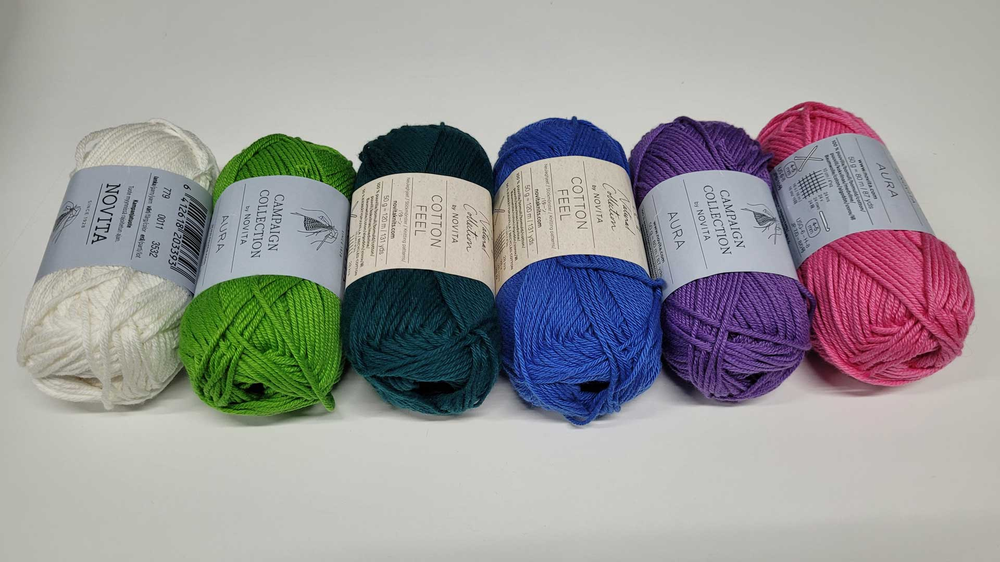


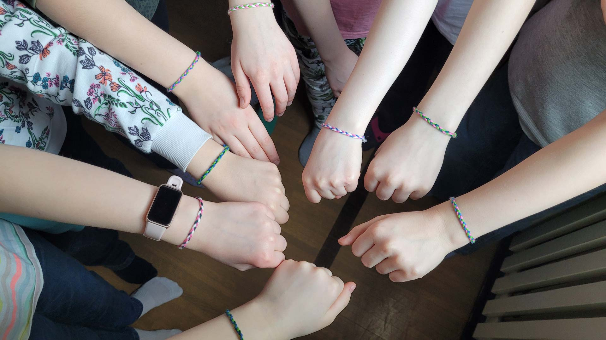
Background and Objective
In spring 2019, I did an Erasmus+ semester abroad at the University of Lapland in Rovaniemi, the capital of
Finnish Lapland. I have always been fascinated by natural phenomena, and so one main reason for my choice to
go there was to witness auroras. Watching auroras by myself was soothing and meditative, but it was even
better when sharing the joy with the friends I made during this exchange. Gazing at the colourful night sky
became a social event, creating lasting memories.
Friendships have always been an important part—if not the most important part—of my life. I met my closest
friends at primary school, in high school, in my Bachelor’s studies, and also during my Master’s studies at
Aalto University. And so, I desired to have friendship as another central theme in my Master's thesis.
In summer 2021, I eventually moved to Helsinki. Before starting my studies at Aalto University, I started a
job as an after-school programme instructor at the Helsinki German School in January 2022 for six months. The
job was motivating and rewarding, as the children were joyful, curious, and full of energy—no day was the
same. I also enjoy working with children because of their vast and unpredictable imaginations.
Throughout my studies, I developed a passion for interactive experiences besides video games, which was my
initial motivation to start studying. My favourite tools are 3D software, especially the game engine Unreal
Engine, which I have used since 2018.
With AURORA, my aim was to create an interactive programme designed for children to participate in a workshop,
in which they would find creative ways of expressing their friendships through virtual auroras by engaging in
social and playful interactions as groups. Ultimately, with the results of my project, I want to contribute
useful insights to the field of embodied interaction with a focus on child-computer interaction (CCI).
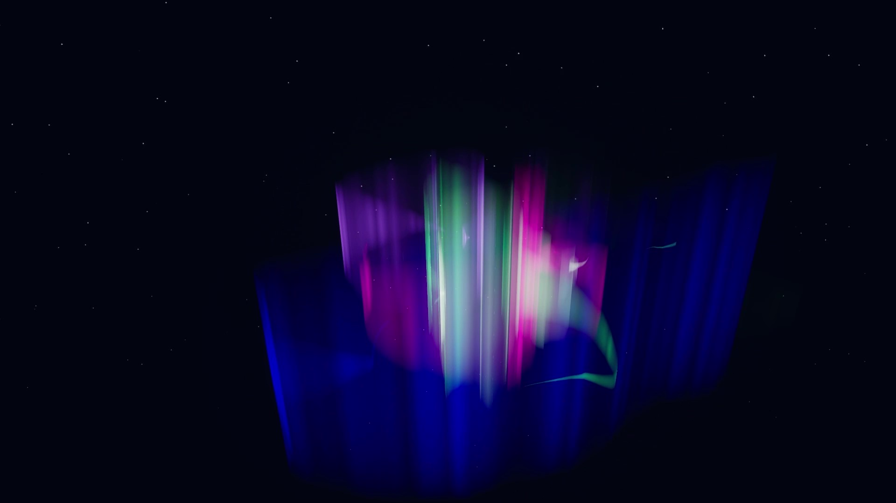

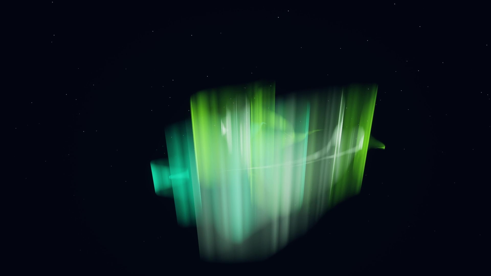

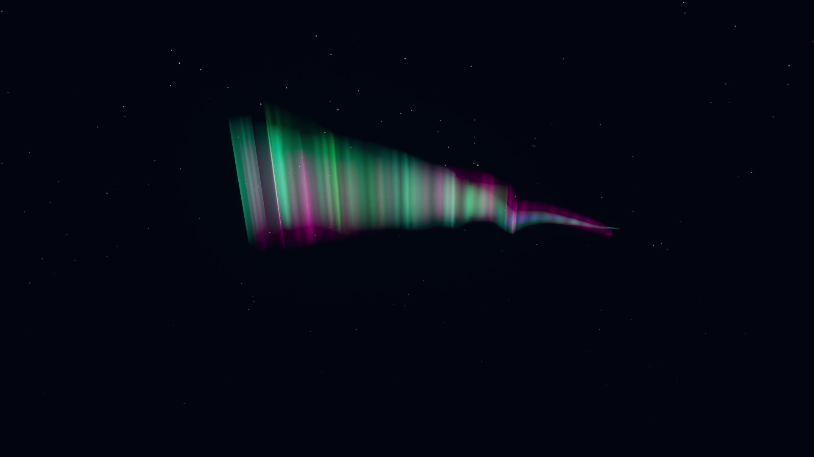


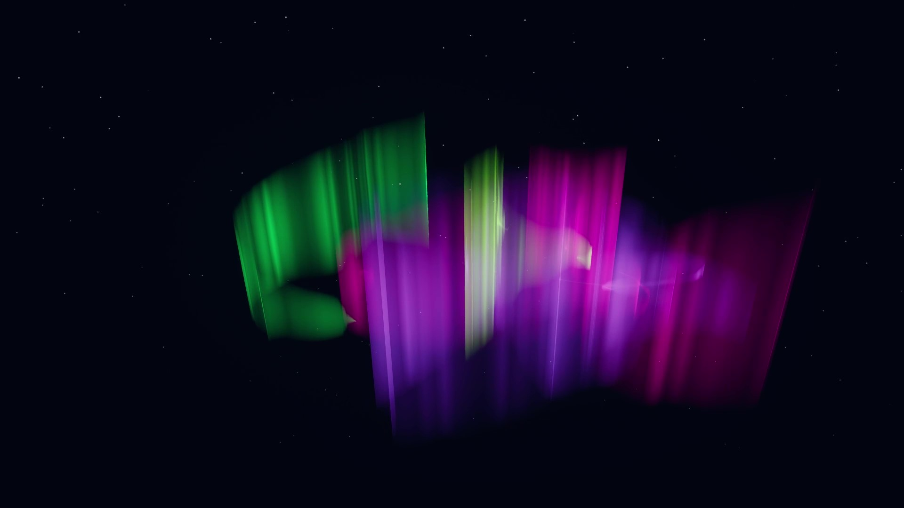
Year
2024–2026
Type
Master's Thesis Project:
Interactive Experience
Collaboration
Helsinki German School
Hardware & Software
Stereolabs ZED 2i
ZED SDK
Unreal Engine 5
Adobe After Effects